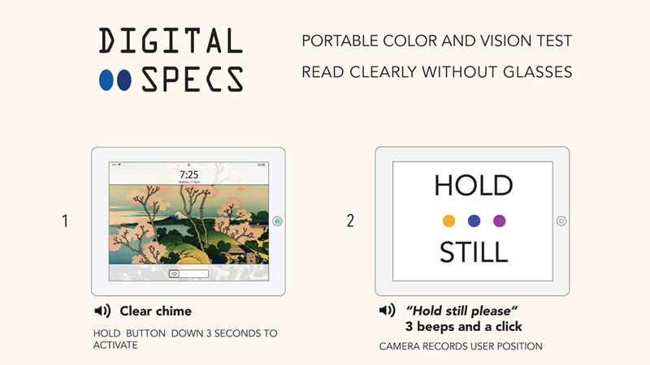
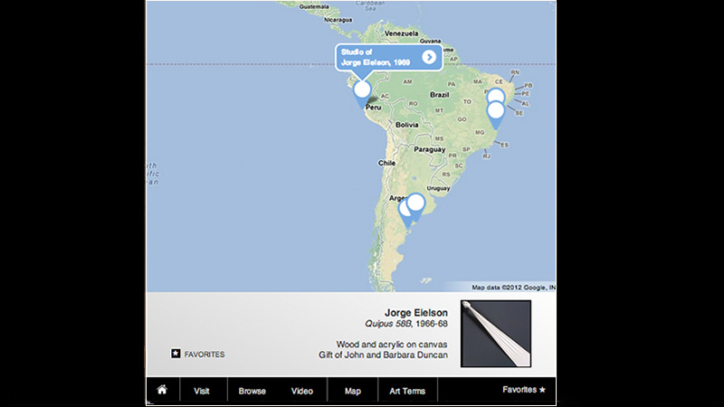
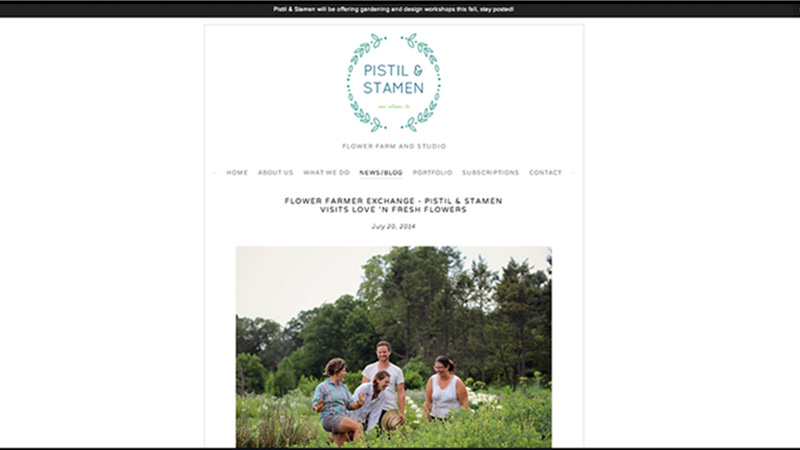

Digital Specs
A solo project in Design Research was to design and diagram a human-mobile interaction. I envisioned Digital Specs as a tool for diagnosing vision problems away from an eyedoctor's office--a portable, interactive eye chart. The interface uses the tablet camera to assess the users' location, audio cues to solicit user behavior and visual prompts to test color blindness.

Art Exhibition iPad App
The mission of the on-campus Blanton Museum of Art is to serve the academic community, the broader art world, and the local Austin audience. The result of this broad mandate is a wealth of targeted educational material reaching only a fraction of the overall visitors. After conducting stakeholder interviews with the Blanton Museum of Art, my team designed this prototype iPad app as a proof of concept to produce an intuitive single interface that brought together the museums' existing educational content with an interactive database for viewing collection items.
After a positive response from the Blanton staff, the project was expanded into the Art Collection Management Database.

Pistil and Stamen Flower Farm and Studio
I was contracted by a New Orleans-based Flower Farm to develop a new brand identity and website that could be easily updated by the farm's techno-phobic owners. Pistil and Stamen operates a flower CSA in conjunction with GoodEggs so the site also incorporates commercial functions.
Categories
Recent Projects
-
 Archives and Collections
Archives and Collections
-
 Preservation
Preservation
-
 Learning Tools and Games
Learning Tools and Games
-
 Prototypes and Front End
Prototypes and Front End
Search